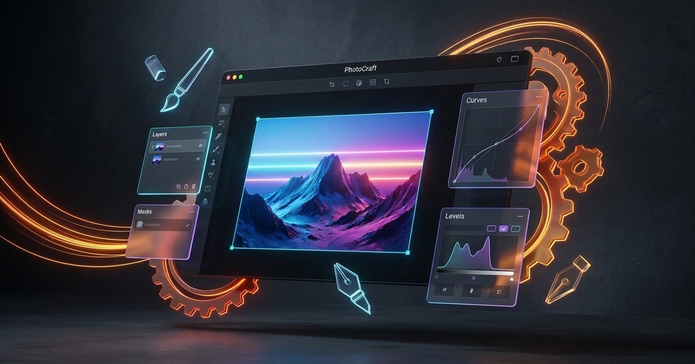
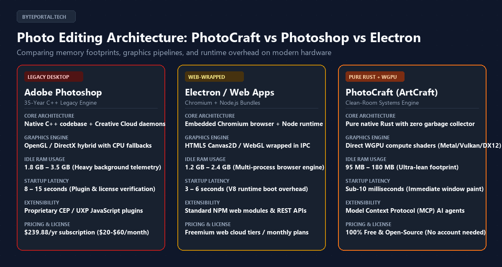

PhotoCraft: Free Open-Source Photoshop Alternative in Rust
· 5 min read
A designer should not need a $240 annual subscription just to crop a product photo, adjust a curve, or export a layered banner. Yet Adobe Photoshop charges $20 to $60 every month, runs background telemetry daemons that eat 2GB of RAM, and threatens users with cancellation fees for software running on their own machine.
GIMP tried to solve this thirty years ago, but its clunky interface and lack of modern non-destructive adjustment layers turn away modern creators. Photopea solved the UI problem, but wrapped it inside a browser tab filled with third-party advertising banners.
Now, a native desktop solution has arrived. As part of the broader ArtCraft open-source suite created by engineer Brandon Thomas, PhotoCraft is a clean-room, native raster image editor written in 100% Rust. It delivers native GPU compute shaders, instant PSD file parsing, and sub-10ms startup times with zero subscription fees.
Quick Summary (The Short Version)
- • Pure Rust & WGPU: Native hardware rendering with Vulkan, Metal, and DirectX 12. Consumes under 150MB of RAM at idle with zero Electron or Chromium bloat.
- • Photoshop Feature Parity: Supports non-destructive layer stacks, blend modes (Multiply, Screen, Overlay), adjustment layers (Curves, Levels, Hue/Sat), clipping masks, and PSD import/export.
- • AI & MCP Integration: Built-in Model Context Protocol (MCP) server enables local AI agents to crop, retouch, and transform layers via automated terminal prompts.
- • 100% Free & Open Source: Hosted on GitHub under the storytold organization. No login, no cloud sync lock-in, and zero telemetry.

Under the hood: why Rust makes photo editing fast
When you edit a 45-megapixel raw photo in traditional software, every brush stroke recalculates millions of color values across layered RGBA pixel arrays. Photoshop handles this with decades of optimized C++ assembly, but surrounds that core with heavy license checkers, cloud synchronization daemons, and background analytics services.
Electron wrappers attempt to solve desktop distribution with web technology, but suffer from garbage collection pauses. When JavaScript halts execution to reclaim memory, your brush stutters on the canvas.
PhotoCraft bypasses both failure modes. Written from scratch in Rust, it uses WGPU—the cross-platform graphics API that speaks directly to your GPU via Metal on macOS, DirectX 12 on Windows, and Vulkan on Linux. Pixel blend calculations and filter convolutions execute inside dedicated GPU compute shaders. The result is fluid 120 FPS canvas panning, zero garbage collection stutter, and a memory footprint that sits comfortably below 180MB.

Head-to-head comparison: PhotoCraft vs Photoshop vs GIMP vs Photopea
To see where PhotoCraft fits in the creative ecosystem, we evaluated it against the dominant desktop and web photo editors across daily workflow requirements:
| Feature | PhotoCraft | Adobe Photoshop | GIMP 3.0 | Photopea |
|---|---|---|---|---|
| Engine / Runtime | Pure Rust + WGPU | C++ / Creative Cloud | C / GEGL | Browser JavaScript |
| Idle Memory Footprint | 95MB – 180MB | 1.8GB – 3.5GB | 280MB – 650MB | 800MB – 1.8GB (Tab) |
| Startup Time | Sub-10 ms | 8 – 15 seconds | 4 – 8 seconds | 2 – 5 seconds |
| PSD File Support | Full Layers & Masks | Native Master Format | Basic (Some clipping lost) | Excellent Web Parsing |
| AI Automation API | Native MCP Server | Proprietary Firefly UI | Python Scripting | None (Manual Browser) |
| Pricing | 100% Free (MIT/Apache) | $239.88 / year | 100% Free (GPLv3) | Free with Ads / $5/mo |
Building and running PhotoCraft locally
Because PhotoCraft is written in Rust, you compile it into a single, standalone binary with zero external runtime dependencies. Make sure you have the Rust toolchain installed, clone the repository from GitHub, and build in release mode:
# Clone the ArtCraft repository
git clone https://github.com/storytold/artcraft.git
cd artcraft/apps/photocraft
# Build and launch with hardware GPU acceleration
cargo run --releaseWhen the binary boots, it immediately detects your primary display, initializes a WGPU surface, and presents an uncluttered, modern dark-mode canvas. You can drag and drop any .psd, .png, or .jpg file directly onto the window.
What PhotoCraft is not (current limitations)
Open-source alternatives deserve honesty. While PhotoCraft is an extraordinary technical achievement for digital artists, photographers, and web developers, it is not yet a complete 100% replacement for every specialized print shop:
- Not a commercial CMYK prepress studio: If your agency prepares multi-channel spot colors or Pantone plates for six-color offset printing presses, Photoshop remains the industry contract standard.
- No cloud-based generative inpainting: PhotoCraft does not connect to Adobe Firefly or remote cloud servers to hallucinate new backgrounds. It focuses on local, deterministic raster manipulation.
- Smart Objects are rasterized: Complex nested Photoshop Smart Objects with embedded vector vector shapes are rendered to raster layers upon import.
The takeaway
For decades, creators accepted Adobe's price hikes and background telemetry as the inevitable cost of professional design. PhotoCraft proves that modern systems programming in Rust can replicate the core Photoshop workflow in an ultra-lean, GPU-accelerated application that you truly own.
If you have Rust installed on your machine, clone storytold's repository and test PhotoCraft on your next photo edit. You can also explore the rest of the 13 apps in our full ArtCraft suite breakdown.